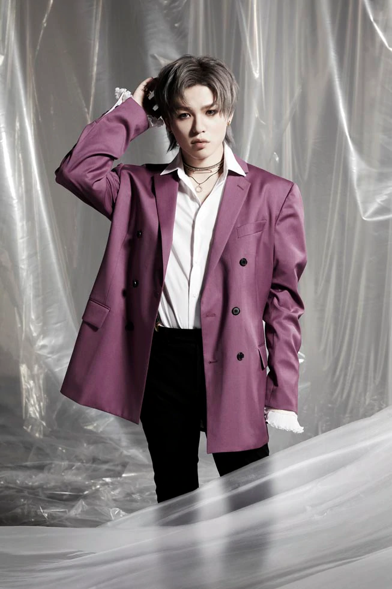

TOP
PROFILE
NEWS
LIVE
PROFILE
AAA
|
TAKAHIRO NISHIJIMA
|
MISAKO UNO
|
MITSUHIRO HIDAKA
|
SHINJIRO ATAE
|
SYUTA SUEYOSHI

SHUTA SUEYOSHI
末吉 秀太
Birth Date: 1986/12/11
Birth Place: 長崎
Height: 167cm
Blood Type: A型
＜TV＞
2006.02 短編ドラマ「彼らの海8」（テレビ熊本(TKU)、フジテレビ(CX)などでOA）
2008.10～ 関西テレビ(KTV)「未来世紀シェイクスピア」
2011.10 フジテレビ「逃走中18 ～run for money～【狙われたハンター編】」
＜舞台＞
2009.09～ ミュージカル「Love Musical」主演
2013.11～ 舞台「シダの群れ 第三弾 港の女歌手編」
＜その他＞
2010.08 Dream5シングル「僕らのナツ!!」振付
2012.12 イベント「DANCE HOLIC 1st anniversary」@shibuya harlem
2014.06 LIVE & DANCE fes よみうりランド 「末吉秀太 SPECIAL DANCE NUMBER」